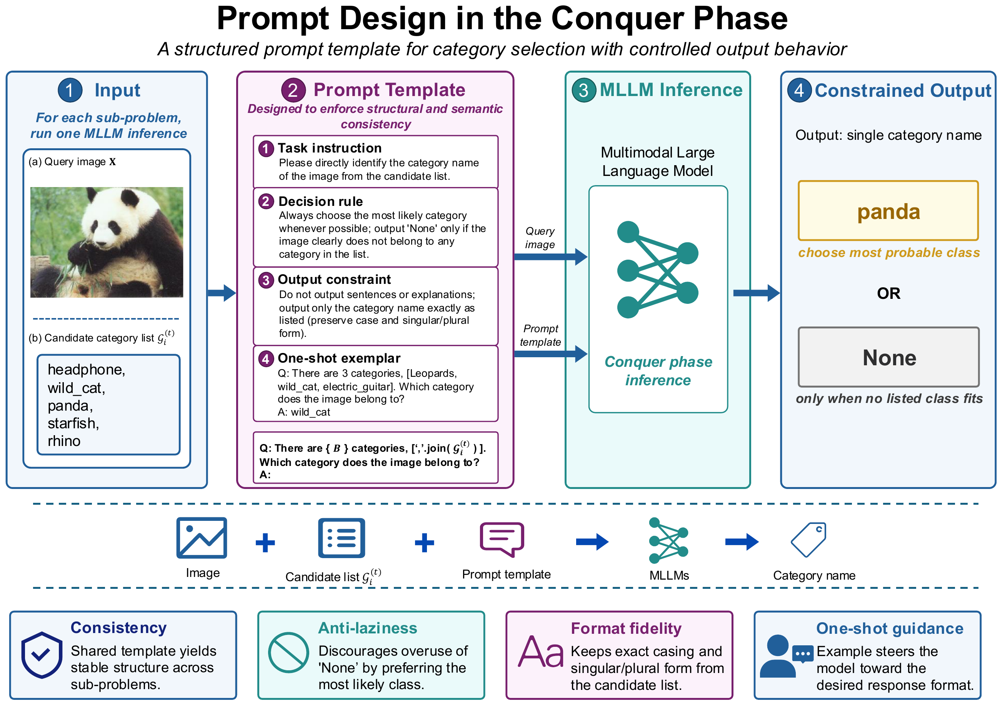
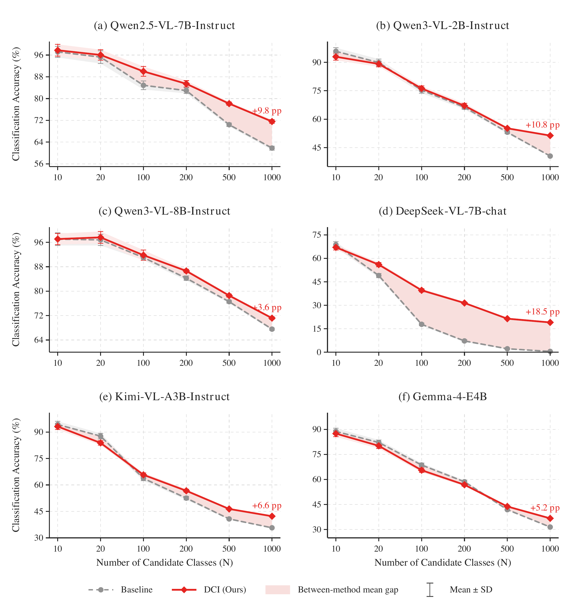

Divide
Partition the candidate label space into compact groups of size K.
As label spaces grow, long prompts dilute attention and collapse MLLM recognition accuracy. DCI restores the signal by dividing the search space, solving local sub-problems in parallel, and dynamically pruning candidates—without training or fine-tuning.
Multimodal Large Language Models (MLLMs) have demonstrated strong capabilities across a wide range of vision-language tasks. However, when applied to large-scale image classification, their performance degrades significantly as the label space expands—a phenomenon we define as Performance Collapse in Long Sequence Recognition. Through an information-theoretic analysis, we reveal that this collapse stems from a fundamental conflict between escalating information entropy and attention dilution and decay, which impairs the model's ability to maintain a sufficient signal-to-noise ratio when processing extremely long prompts.
To mitigate this issue, we propose Divide-and-Conquer Inference (DCI), a novel test-time scaling strategy for visual recognition with MLLMs. DCI recursively decomposes complex global classification tasks into simpler localized sub-problems and employs dynamic pruning to compress the search space. The method improves the local signal-to-noise ratio, mitigates weight dilution in long-sequence inference, and achieves favorable computational scaling. Extensive experiments demonstrate consistent accuracy improvements across large-scale recognition benchmarks without additional training or fine-tuning.
DCI performs coarse-to-fine recognition through four model-agnostic inference operations.
Partition the candidate label space into compact groups of size K.
Solve independent localized recognition problems with the same MLLM.
Discard rejected branches and retain only plausible category predictions.
Repeat recursively until the search converges to one final prediction.

None when no candidate is plausible.
DCI consistently mitigates accuracy degradation as the candidate label space expands.

DCI controls local sequence length, parallelizes independent groups, and progressively compresses the active search space.

git clone https://github.com/FourierAI/DCI.git
cd DCI
pip install -e .
dci-eval \
--dataset imagenet1k \
--model Qwen/Qwen3-VL-2B-Instruct \
--image-root /path/to/imagenet/val \
--k-values 100 50 20 10@misc{ye2026dci,
title = {Divide-and-Conquer Inference for Large-Scale Visual Recognition with Multimodal Large Language Models},
author = {Zhipeng Ye and Jiaqi Huang and Feng Jiang and Qiufeng Wang and Yikang Duan and Dawei Wang and Xihang Zhou and Qian Qiao},
year = {2026},
note = {Manuscript under review; source code available at \url{https://github.com/FourierAI/DCI}}
}